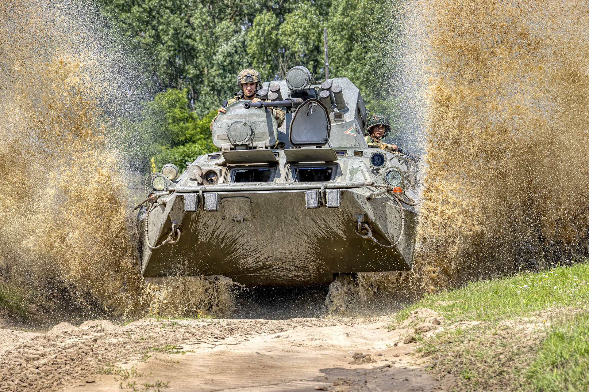
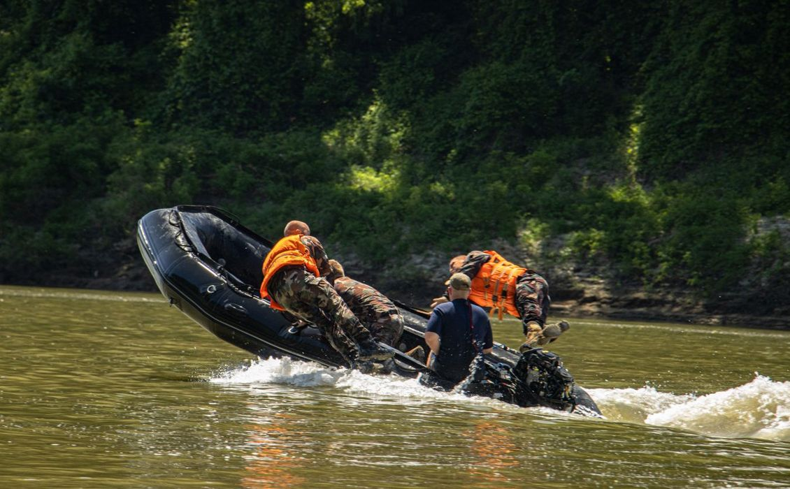
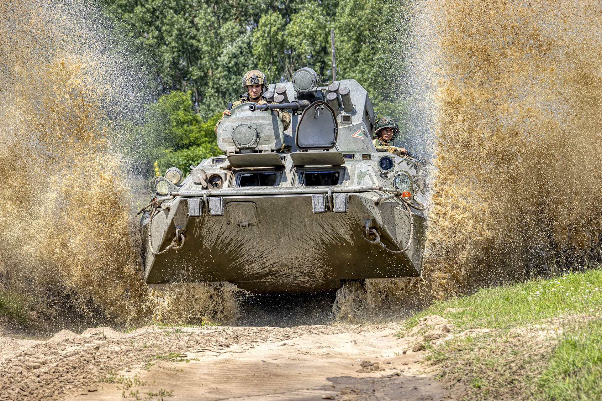
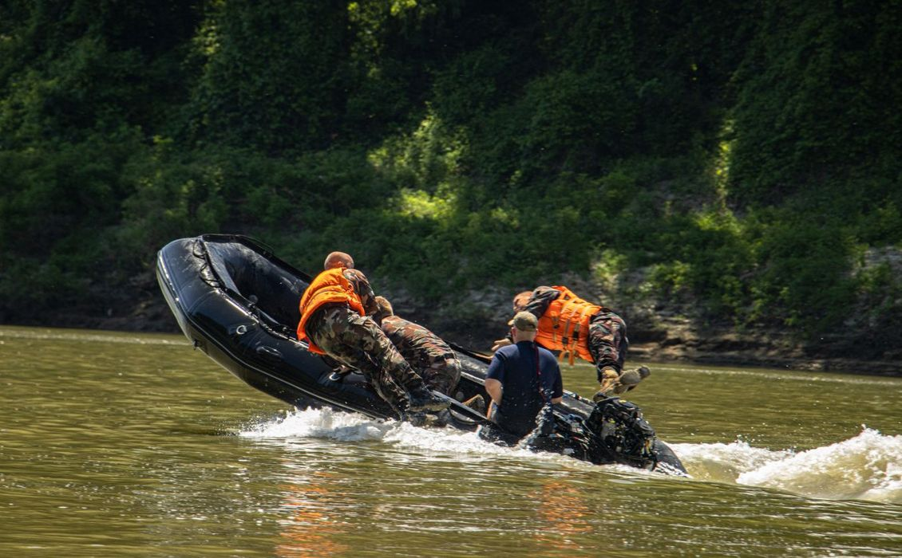

A világ folyamatosan változik – gazdasági válságok, természeti katasztrófák,
technológiai fejlődés és geopolitikai feszültségek formálják mindennapjainkat.
Ebben a gyorsan változó világban a biztonság sosem lehet magától értetődő.
Az állam egyik legfontosabb feladata, hogy garantálja polgárainak védelmét, szabadságát és békéjét.
A toborzás kulcsfontosságú abban, hogy
a Magyar Honvédség mindig felkészült, elszánt és korszerűen képzett katonákból álljon.
A katonai toborzás nem csupán egy munkalehetőség hirdetése – ez a jövőnk biztosítása.
A haderő gerincét olyan férfiak és nők adják,
akik hajlandóak tenni a közösségért, megvédeni a határokat, és segíteni a bajbajutottakat.
A toborzással nemcsak harcosokat keresünk –
A katonai pálya nemcsak szolgálat – ez életforma, karrier, közösség és fejlődési lehetőség egyszerr.
Aki belép, egy olyan világba csöppen, értelem, fegyelem és kitartá találkozik abátorsággal, bajtársiassággal és szakmai kihívásokka.
| Szint / Beosztás | Elvárás | Havi Bruttó Fizetés |
|---|---|---|
| Regruta | Alapképzés alatt | 280.000 – 320.000 Ft |
| Közkatona | Alapkiképzés után | 350.000 – 400.000 Ft |
| Őrvezető / Tizedes | Tapasztalat, alap parancsnoki képzés | 400.000 – 450.000 Ft |
| Szakaszvezető / Őrmester | Érettségi, vezetői képesség | 450.000 – 500.000 Ft |
| Törzsőrmester / Zászlós | Tapasztalat és középfokú végzettség | 500.000 – 600.000 Ft |
| Tiszt (Hadnagy – Százados) | Felsőfokú végzettség | 650.000 – 800.000 Ft |
| Főtisztek (Őrnagy – Ezredes) | Hosszú szolgálat, vezetés | 850.000 – 1.100.000 Ft |
| Vezérkar | Stratégiai szerepkör | 1.200.000 Ft fölött |
Béren kívüli juttatások, külföldi missziós pótlékok, lakhatási támogatás, családi támogatások
Bárki képes lehet a változásra. Bárki válhat hőssé.
A katonai élet nemcsak arról szól, hogy megtanulsz fegyelmet, túlélést vagy stratégiát
– hanem arról is, hogy megtanulod, ki vagy valójában.
Ebben a világban sokan keresik az utat, a célt, az értelmet. Nálunk megtalálhatod.
A Magyar Honvédség nemcsak munka
– ez közösség, hivatás, elhivatottság, és egy új élet kezdete.
Ha úgy érzed, készen állsz: Lépj előre.
Tedd meg az első lépést. Magyarország számít rád – mi számítunk rád.
Jelentkezz most, és írjuk együtt a jövőt!
 


